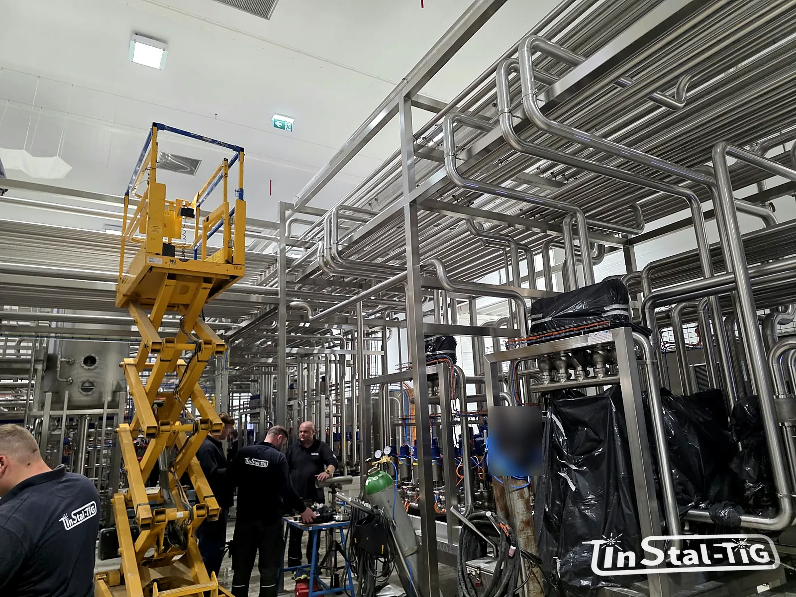

Jak przygotować zapytanie ofertowe na instalację, żeby szybko dostać wycenę

„Proszę o wycenę instalacji DN 50 ze stali nierdzewnej.” Takie zapytanie da się wycenić tylko w przybliżeniu albo trzeba odpisać z listą pytań. Każda wymiana wiadomości to kolejne dni. Poniżej zebraliśmy informacje, które pozwalają wykonawcy od razu policzyć zakres, i błędy, przez które oferty od różnych firm trudno potem porównać.
1. Co dokładnie ma powstać?
- Rodzaj prac: rurociąg technologiczny, konstrukcja wsporcza, pomost lub podest, obudowa maszyny, a może kilka z nich naraz.
- Ilość: dla rurociągu długość w metrach bieżących i średnice, dla konstrukcji przybliżona masa albo wymiary, dla pomostu powierzchnia.
- Elementy na trasie: liczba kolan, trójników, zaworów, czujników, przejść przez ściany. To one, a nie same metry rury, zajmują najwięcej czasu.
- Nowa instalacja czy przeróbka istniejącej: przy przeróbce dochodzi demontaż, dopasowanie do starych rur i często praca w krótkich oknach postoju.
Podając średnice, pisz średnicę zewnętrzną i ściankę albo normę, a nie samo DN. Dlaczego, wyjaśniamy w artykule DIN 11850 czy ISO 1127?
2. Co będzie płynąć w rurach?
- medium (produkt, woda, para, chemia) i to, czy instalacja ma kontakt z żywnością,
- temperatura i ciśnienie pracy,
- sposób mycia: czy instalacja będzie myta CIP i w jakiej temperaturze.
Od tych danych zależy gatunek stali, połączenia, uszczelki i sposób podparcia rur (gorące mycie oznacza wydłużenia, o których piszemy w tekście o konstrukcjach wsporczych).
3. Materiał i wykończenie
- Gatunek stali: 304 czy 316L. Jeśli nie wiesz, napisz o medium i środkach myjących, a wykonawca doradzi (porównanie w artykule Stal 304 czy 316L?).
- Wykończenie powierzchni: wymagana chropowatość od strony produktu (np. Ra ≤ 0,8 µm), trawienie i pasywacja, szlifowanie, elektropolerowanie.
- Wymagania higieniczne zakładu, np. dopuszczalna długość martwych odgałęzień (zobacz zasada 3D).
4. Granica dostaw: kto dostarcza co?
To najczęstsze źródło nieporozumień. Warto napisać wprost:
- kto kupuje zawory, pompy, czujniki i armaturę,
- kto demontuje i wywozi starą instalację,
- kto robi izolację, automatykę, podłączenia elektryczne,
- czy w zakresie jest projekt i dokumentacja, czy tylko wykonanie według Waszych rysunków,
- gdzie kończy się zakres wykonawcy: na kołnierzu zbiornika, na zaworze, na króćcu maszyny.
5. Warunki na miejscu
- wysokość montażu i dostęp (podnośnik, rusztowanie, praca nad maszynami),
- czy zakład pracuje w czasie montażu i jakie są okna postoju,
- wymagania BHP zakładu: szkolenia wejściowe, pozwolenia na prace spawalnicze, strefy zagrożenia wybuchem,
- gdzie można składować materiał i prefabrykować na miejscu,
- lokalizacja zakładu, bo od niej zależą koszty dojazdu ekipy.
6. Dokumentacja przy odbiorze
Jeśli przy odbiorze potrzebujecie konkretnych dokumentów, napiszcie o tym od razu, bo mają wpływ na koszt. Mogą to być np. atesty materiałowe (świadectwa odbioru według PN-EN 10204, najczęściej typu 3.1), protokoły prób ciśnieniowych, protokoły kontroli spoin, pomiary chropowatości czy dokumentacja powykonawcza.
Warto wiedzieć: rysunek nie musi być profesjonalny. Projekt w PDF, DWG lub DXF jest najlepszy, ale bardzo pomagają też schemat instalacji, szkic odręczny z wymiarami albo kilka zdjęć miejsca montażu. Przy większych zleceniach przyjeżdżamy na wizję lokalną.
Najczęstsze błędy w zapytaniach
- Samo DN bez średnicy zewnętrznej i normy. Wykonawca zgaduje szereg, a różnice w cenie kształtek bywają spore.
- Brak informacji o medium i myciu. Nie wiadomo, czy wystarczy 304, czy trzeba 316L, i jakie wykończenie powierzchni wycenić.
- Niejasna granica dostaw. Jedna oferta zawiera zawory i demontaż, druga nie, a wyglądają na porównywalne.
- „Na wczoraj” bez okien postoju. Termin realizacji zależy od tego, kiedy można wyłączyć linię, a nie tylko od wykonawcy.
Żeby oferty dało się porównać, najlepiej wysłać wszystkim wykonawcom to samo zapytanie z tą samą granicą dostaw.
Lista kontrolna
- rodzaj prac i ilości (metry, średnice, masa, powierzchnia),
- medium, temperatura, ciśnienie, mycie CIP,
- gatunek stali i wykończenie powierzchni,
- granica dostaw,
- warunki montażu i okna postoju,
- wymagana dokumentacja przy odbiorze,
- rysunki, schematy lub zdjęcia,
- termin i lokalizacja.
Większość tych informacji zbiera nasz formularz Wycena online: rodzaj prac, ilości, materiał, wykończenie, termin i lokalizację. Rysunki i zdjęcia dołączysz do e-maila, który formularz przygotuje na koniec.
Masz już dane do zapytania?
Wypełnij formularz wyceny albo zadzwoń. Jeśli czegoś nie wiesz, napisz, co masz, a dopytamy o resztę.
Wycena online Zadzwoń: 667 466 431 Napisz e-mail